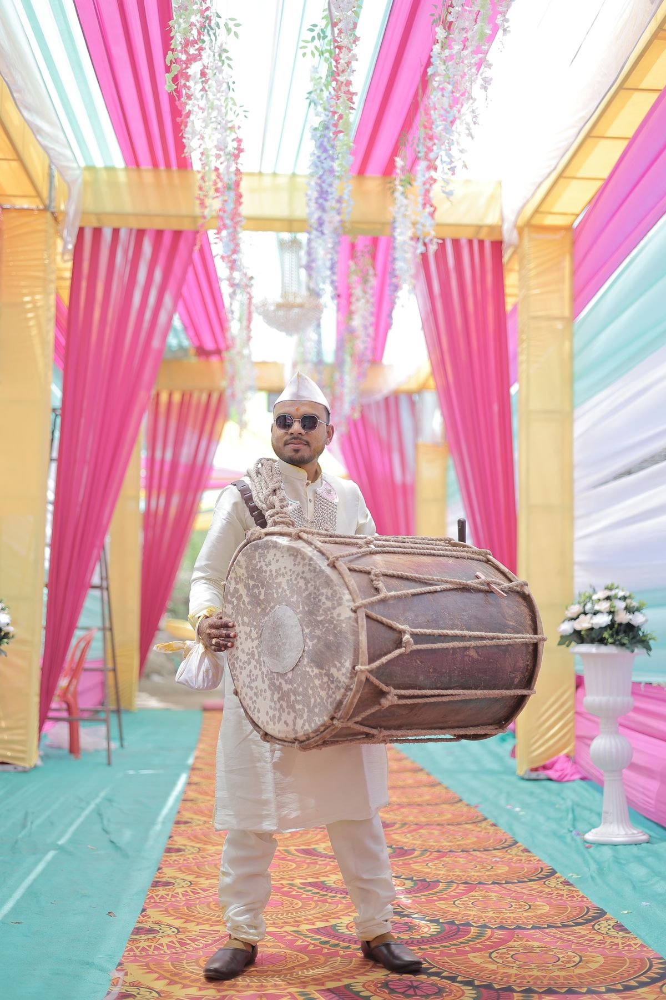
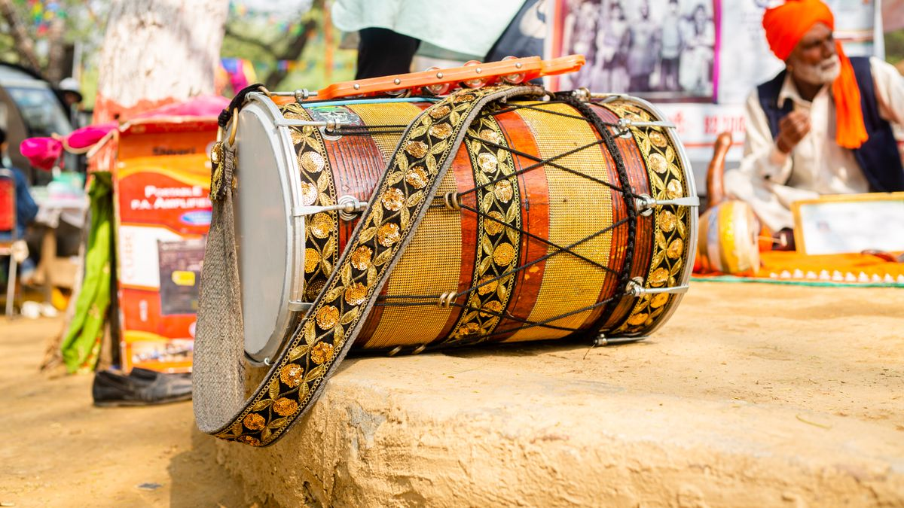

Run sheet № 2026 — Dhol player for weddings & events
The dhol books the party. Then it runs it.
I’m Manny Sandhu, a dhol player in Birmingham. The drum is the easy part — what you’re booking is the timing: the baraat that lands at the doors on the minute, the entrance that lifts the room, the sets that end before the curfew, not after it. Everything below is how an evening actually runs.

Hear the patterns
Four patterns do ninety per cent of the work. Each one is a tool with a job: the walk, the entrance, the floor, the finale. Press play — the grid lights the stroke that’s sounding, and the names under the numbers are the bols as they’re taught: Ge (bass side), Na (treble slap), Ka (rim).

Pattern — pick one
The groove under every bhangra track — the one the dancefloor already knows.
Nothing plays until you press play. No sound is loaded before that.
Honest note: these are synthesised strokes generated in your browser to show the pattern structures — demonstrations, not recordings. A real dhol is louder, warmer and considerably more physical. That’s rather the point of booking one.
What gets booked — and what it costs
Fees are printed because “price on enquiry” wastes everyone’s evening. These are starting points for Birmingham and the Midlands; the things that move them are listed underneath, in the open.
| Booking | What it is | Set structure | Status |
|---|---|---|---|
| The Wedding Day | Baraat, entrance and the full evening, one bookingUp to 5 hours on site | 45 + 10 + 40 + 35 min | Booking — 2027 open |
| Evening Only | Receptions and parties that start after dinnerEntrance cue included | 10 + 40 + 35 min | Booking |
| Sangeet & Mehndi | The family night before the dayDinner set first, floor later | 45 + 40 min | Booking |
| Corporate & Diwali | Company parties and hotel ballroomsShort sets, curfew-safe timings | 3 × 25 min | Oct–Nov books fast |
| Dhol + DJ | The full evening with my DJ partnerCued together, one run-sheet | Continuous to close | Booking |
from £495
The Wedding Day
Baraat, entrance and two dancefloor sets. Up to 5 hours on site, arrival 90 minutes before the first cue.
from £350
Evening Only
Entrance cue plus two dancefloor sets. The format for receptions, birthdays and party nights.
from £395
Corporate & Private Events
Three short sets fitted around speeches and dinner, timed against the venue’s curfew from the start.
from £895
Dhol + DJ Package
The full evening with my regular DJ partner — one booking, one cue sheet, no gaps between us.
£75 / hour
Extra Time
Per extra hour on the night, agreed with the organiser before the last set ends — never a surprise afterwards.
+ £250
Second Player
A second dhol for baraats over 30 minutes and crowds over 300. Rotation is how a long procession stays loud.
What moves the price
- Finish time: finishing after midnight adds £60 — the drum is not the problem, the drive home at 1 a.m. is priced honestly.
- Travel: 30 miles from Birmingham is included. Beyond that, 45p per mile, quoted in the reply — not added later.
- Peak dates: New Year’s Eve and bank-holiday Sundays are quoted individually.
- Second player: recommended above 300 guests or a baraat over 30 minutes; your call, my honest advice.
Plan the evening
This is the sheet I send every client before the day. Set the start time, cut the cues you don’t need, and watch the clock — the totals are the totals; nothing hides in the gaps.
-
17:00–17:4545 minBaraat — the processionOutdoors, walking with the groom’s party. Sets the pace, gathers the crowd, lands at the doors.
-
17:45–17:5510 minCouple’s entranceThe room stands up. One short, huge cue — timed to the doors opening, not a minute before.
-
17:55–18:4045 minDinner setKeharwa at low hands while food is served. Under the conversation, never over it.
-
18:40–19:2040 minDancefloor set 1Chaal locked to the DJ’s first bhangra block. This is the set that fills the floor.
-
19:20–19:3515 minBreakOff the drum. Water, towel, cool down — a dhol head and a player both need it.Off the drum
-
19:35–20:1035 minDancefloor set 2 + finaleDhamaal to close. The last ten minutes are the loudest of the night, on purpose.
Evenings with a DJ run longer than this sheet — the dhol cues sit inside the DJ’s night, and the gaps between my sets are his. This plan covers the drum’s work, which is the part that needs timing to the minute.
Word from the planner — and the diary
“Manny sent the cue sheet before I’d even confirmed the booking. Four hundred guests, a horse, a groom running twenty minutes late — the baraat still landed at the doors on the revised minute, because he’d walked the route with me the week before and built the slack into the right place. That’s not a drummer, that’s a second planner with a drum.”
The diary — winter 2026 / 27
- Sat 12 Dec 2026Leicester — wedding dayBooked
- Sat 19 Dec 2026Birmingham — corporate DiwaliBooked
- Sat 09 Jan 2027—Open
- Sat 23 Jan 2027Wolverhampton — wedding dayBooked
- Sat 06 Feb 2027—Open
- Sat 20 Feb 2027Coventry — evening onlyBooked
- Sat 06 Mar 2027—Open